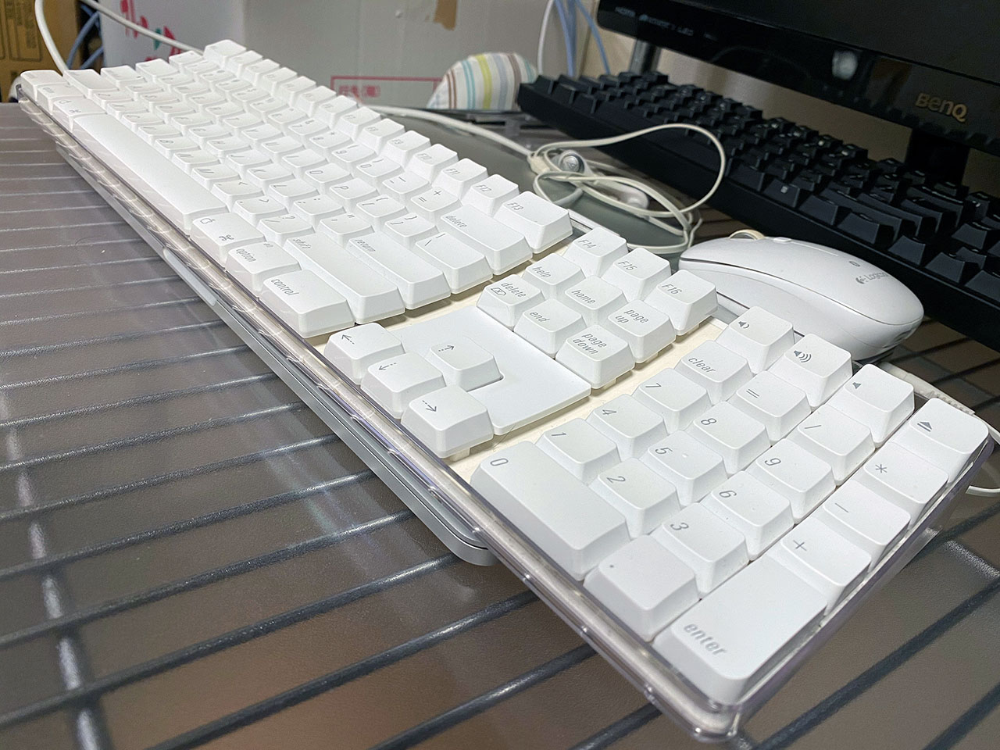
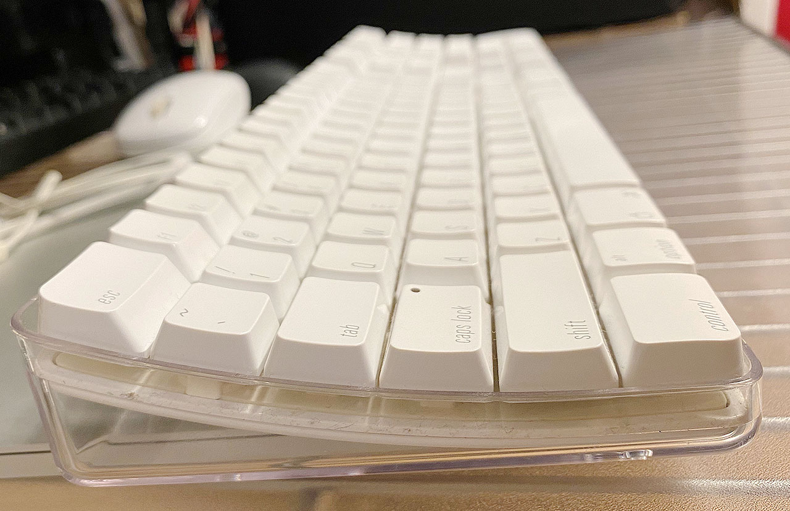

Apple USB Keyboard A1048 M9034 を買った
以前持っていた、A1016 M9270 という Apple 初のワイヤレスキーボードの、USB 版といえる A1048 M9034 を買った。
上の A1016 をしばらく使っていたが、Bluetooth 接続がブチブチ切れるのと、乾電池駆動は辛すぎるので、USB 接続できる ML110LL を買って使っていた。コチラは現行の Magic Keyboard の有線接続版といえる、一世代前のモノ。
中古だったが動作には問題なく、3年ほどガシガシ使っていたのだが、最近ついに壊れてしまった。Shift キーを押しながら特定のキーを入力できなかったり、突然半角の 9 を連打し続けたりするようになった。
仕方がないのでまた Mac 用のキーボードを買おう、しかし無線タイプはやっぱりないよな、ということで、中古を漁っていたらこの A1048 M9034 を見つけた次第。


以前持っていた A1016 の個体より黄ばみがあるが、やっぱこのデザインが最高にカッコイイよなーと思う。友達が持っていた Power Mac G4 のキーボードも、コレの黒いバージョンで、カッコ良かったんだよなぁー。
打ち心地は ML110LL よりも深く、固い感じもするのだが、ぐにゃぐにゃでもあるという、独特な感じ。

一番ツラいのは右 Command キーの位置で、> キーと ? キーの間くらいのところに位置している。コレが ML110LL だと > キーの真下に右 Cmd キーが位置していて、コチラの方が押しやすいのだ。A1016 や A1048 だと右手親指をかなり内側に折り込んで右 Cmd キーを押す必要があり、慣れが必要。
↑上のサイトでも文句が書かれている。
Keyboards and mouses from Apple ever since the iMac in 1998 are usually the worst keyboards with respect to ergonomics.
Apple pro keyboard (A1048), year 2003
Note the distance of the right side's modifier keys. It is not possible, to use the right thumb to press the
optionkey while the index finger remains on theJ. It makes these keys essentially decorative in nature. (Apple did this to make the keys flush at the lower right corner; sacrificing function for esthetics.)
多分 Magic Keyboard より相当打ちづらいと思うんだけど、やっぱカッコイイからコレにした。ｗ
同時期のマウスも透明でカッコイイのよね。
無線版の A1016 にはなかったのだが、この A1048 には2つの USB-A ポートが付いている。使っていないが、多分スマホ充電くらいならイケる…？ML110LL には本体左右から挿せる USB-A ポートが2つあったけど、コレは本体の後ろ側。
2003年モデルの中古品だが、元気に使えて良き良き。